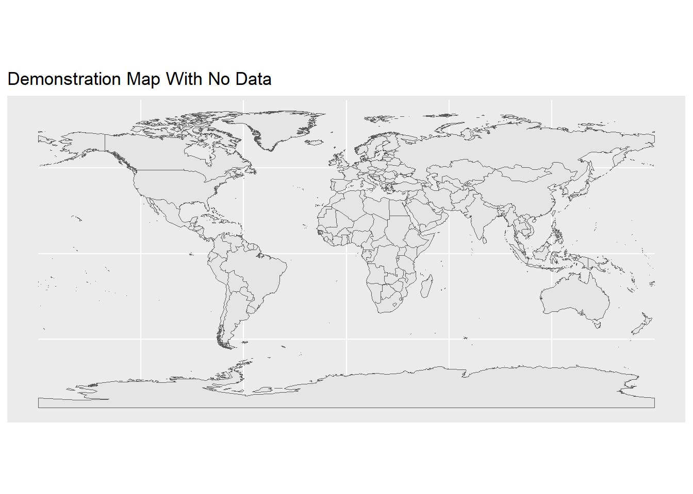

A common task in mapping is that we have a shapefile of map data, but we want to merge in some external data from another source so that we can map that external data. Usually we want to use different colors to map that external data.
Here, I use a shapefile of countries of the world, and map it with some made up data of arbitrary and made up x values for certain countries.
library(sf) # simple (spatial) featureslibrary(ggplot2) # beautiful plotslibrary(dplyr) # data wrangling and joinslibrary(tibble) # library for updated dataframeslibrary(readr) # read CSV fileslibrary(countrycode) # work with country data
Get Shapefile
Here I am using the wrld_simpl dataset of country outlines that is available in several R packages. I read this data into an object called world.
Show the code
world <-read_sf("./shapefiles/wrld_simpl/wrld_simpl.shp")
Make a Map Without Data
I map the data with ggplot, and the special geom, geom_sf.
Show the code
ggplot(world) +geom_sf() +labs(title ="Demonstration Map With No Data")

Get External Data
Here I read in a completely made up data set of arbitrary values. The file that I am reading in is a csv file, but could be a file in any number of formats.
Show the code
externaldata <-read_csv("externaldata.csv")externaldata # replay data set
# A tibble: 6 × 3
ISO3 arbitrary_x name
<chr> <dbl> <chr>
1 COL 10 Colombia
2 CHL 9 Chile
3 ARG 8 Argentina
4 GHA 7 Ghana
5 MLI 6 Mali
6 AUS 5 Australia
Join Data to Shapefile
I use left_join from the dplyr package to merge the spatial data in world with externaldata.
left_join is a function that keeps all observations in the data on the left (the shapefile), and only those matching observations in the data on the right (the external data), which is usually what I want in mapping.
I need a unique identifier for my rows of data, so here I use ISO3, a unique 3 letter identifier for countries of the world.
Show the code
newdata <-left_join(world, externaldata, by ="ISO3")
Make a Map With The Data
Once I have the merged data, it is easy to map it with ggplot and geom_sf. Note that I need to specify an aesthetic for geom_sf. Here arbitrary_x is the fill color for countries on the map.
Data could also be mapped with another package like leaflet.
Show the code
ggplot(newdata) +geom_sf(aes(fill = arbitrary_x)) +# adding a fill aestheticscale_fill_viridis_c(na.value ="grey97", # value for NAoption ="turbo") +# viridis colorslabs(title ="Demonstration Map With Merged Data") +theme_minimal() # better theme